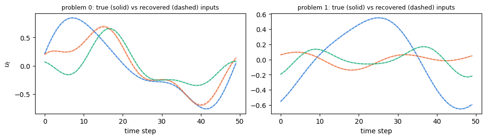
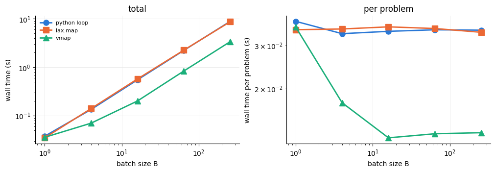
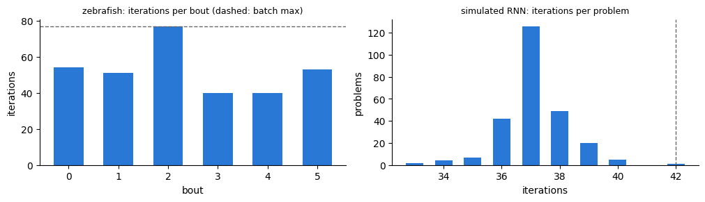

Batched iLQR: many tracking problems at once#
Many applications solve the same optimal control problem for many datasets: one input trajectory per recorded trial, or one per datapoint in every training step of an iLQR-VAE. Only a few leaves of the parameters change from problem to problem (the observations, the reference trajectory, the initial state), while the model is shared.
diffilqrax.batch maps the solvers over such a batch. This notebook checks that batched solves equal one-at-a-time solves and measures wall-clock time on two datasets:
Zebrafish tail bouts: the six bouts of the MGU2 fixture, with the model of the zebrafish reconstruction notebook;
Simulated tracking: a tanh RNN tracking references simulated from the system itself with known inputs, for batch sizes up to 256.
Why batching works now. The solver has three nested loops: the iterations, the regularisation retries and the line search. They run as lax.while_loops (loop="while", the default), so under jax.vmap the batch stops once its slowest problem has converged. The older fixed-length lax.scan + lax.cond loops become selects under vmap, so every problem paid for all max_iter iterations, every retry and every line-search step. while_loop cannot be
reverse-differentiated, but it doesn’t need to be: dilqr and batch.batched_dilqr differentiate the solution implicitly (see gradients through iLQR).
[1]:
import sys
import time
from pathlib import Path
import jax
import jax.numpy as jnp
import matplotlib.pyplot as plt
import numpy as onp
from diffilqrax import batch
from diffilqrax.diff_ilqr import dilqr
from diffilqrax.ilqr import ilqr_simulate, ilqr_solver
from diffilqrax.typs import ModelDims, System, Theta, iLQRParams
jax.config.update("jax_enable_x64", True)
REPO = Path.cwd().parents[2] # docs/source/examples -> repository root; tests/ is not part of the installed package
sys.path.insert(0, str(REPO))
from tests.mgu2_model import load_fixture, make_system, make_theta # the model of the zebrafish notebook
print(f"jax {jax.__version__}, devices: {jax.devices()}")
jax 0.4.38, devices: [CpuDevice(id=0)]
Timing#
timeit compiles the function once (reported separately) and then reports the median wall-clock time of n_rep runs of the compiled function. jax.block_until_ready waits for the asynchronous result.
[2]:
def timeit(fn, *args, n_rep=3):
t0 = time.perf_counter()
compiled = jax.jit(fn).lower(*args).compile()
t_compile = time.perf_counter() - t0
times = []
for _ in range(n_rep):
t0 = time.perf_counter()
out = jax.block_until_ready(compiled(*args))
times.append(time.perf_counter() - t0)
return out, t_compile, float(onp.median(times))
def n_iterations(history):
# once converged the cost history repeats the final cost
h = onp.asarray(history)
return onp.array([int(onp.nonzero(row != row[-1])[0].max(initial=-1)) + 1 for row in h.reshape(-1, h.shape[-1])])
COLORS = ["#2a78d6", "#eb6834", "#1baf7a", "#eda100"] # validated categorical slots, in fixed order
MARKERS = ["o", "s", "^", "D"]
1. Zebrafish bouts#
Only theta.obs differs between bouts. in_axes says so as a pytree prefix: 0 for the batched leaf, None for the shared ones, as in jax.vmap. All bouts start from zero inputs, as in the reconstruction notebook.
[3]:
ocaml_params, data = load_fixture(REPO / "tests" / "fixtures" / "ocaml_mgu.npz")
N_BEG = 12
all_obs = jnp.asarray(data["saved_tail"]) # (6, 160, 7)
theta = make_theta(ocaml_params, data["saved_tail"][0], N_BEG)
n, m, T = theta.uh.shape[0], theta.B.shape[0], data["ilqr_u"].shape[1]
fish = make_system(n, m, T)
fish_params = iLQRParams(x0=jnp.zeros(n), theta=theta)
fish_axes = (iLQRParams(x0=None, theta=jax.tree.map(lambda _: None, theta)._replace(obs=0)), None)
U0_fish = jnp.zeros((T, m))
KW = dict(max_iter=1000, alpha_init=2.0, kkt_tol=1e-6)
def fish_batch(obs):
return fish_params._replace(theta=theta._replace(obs=obs))
def solve_one(obs):
return ilqr_solver(fish, fish_batch(obs), U0_fish, **KW)
def solve_batch(obs, **kw):
return batch.batched_ilqr_solver(fish, fish_batch(obs), U0_fish, fish_axes, **{**KW, **kw})
print(f"{all_obs.shape[0]} bouts, T={T}, latents n={n}, inputs m={m}")
6 bouts, T=171, latents n=120, inputs m=10
The reference is a Python loop over one compiled single-bout solve. The batched strategies are lax.map (one bout at a time, or batch_size bouts vectorised together), vmap, and vmap with the parallel line search. The parallel line search rolls out 8 step sizes at once and keeps the largest accepted one, so it takes the same steps as backtracking.
[4]:
solve_one_c = jax.jit(solve_one).lower(all_obs[0]).compile()
t0 = time.perf_counter()
loop_out = [jax.block_until_ready(solve_one_c(o)) for o in all_obs]
t_loop = time.perf_counter() - t0
(_, Us_loop, _), J_loop, hist_loop = jax.tree.map(lambda *xs: jnp.stack(xs), *loop_out)
fish_runs = {"python loop": (None, None, t_loop)}
strategies = {
"lax.map": dict(strategy="map"),
"lax.map, batch_size=3": dict(strategy="map", batch_size=3),
"vmap": dict(strategy="vmap"),
"vmap + parallel line search": dict(strategy="vmap", linesearch="parallel"),
}
if len(jax.devices()) > 1:
strategies["shard"] = dict(strategy="shard")
for name, kw in strategies.items():
fish_runs[name] = timeit(lambda obs, kw=kw: solve_batch(obs, **kw), all_obs, n_rep=1)
print(f"{'strategy':<30}{'compile (s)':>12}{'run (s)':>10}{'max |dU|':>11}{'max rel dJ':>12}")
for name, (out, t_c, t_r) in fish_runs.items():
if out is None:
print(f"{name:<30}{'':>12}{t_r:>10.1f}")
continue
(_, Us, _), J, _ = out
dU = float(jnp.abs(Us - Us_loop).max())
dJ = float(jnp.abs((J - J_loop) / J_loop).max())
print(f"{name:<30}{t_c:>12.1f}{t_r:>10.1f}{dU:>11.1e}{dJ:>12.1e}")
strategy compile (s) run (s) max |dU| max rel dJ
python loop 85.8
lax.map 2.8 86.6 1.1e-15 1.8e-16
lax.map, batch_size=3 7.1 85.3 2.0e-15 3.5e-16
vmap 4.3 107.1 4.6e-16 3.5e-16
vmap + parallel line search 5.2 121.2 3.5e-15 1.8e-16
Every batched strategy reaches the per-bout solutions, to round-off. With only six bouts of very different lengths (see section 3), vectorising gains little on a CPU: vmap costs about as much as the loop, because every bout waits for the slowest one. Its advantage is on many problems (section 2), on GPU, and in training, where the batch must be solved inside one compiled, differentiable step. Against the OCaml reference the costs agree as in the reconstruction notebook: bouts with a non-zero
difference stopped in another local optimum of the non-convex objective.
[6]:
rel_ocaml = onp.abs(onp.asarray(J_loop) - data["ilqr_cost"]) / onp.abs(data["ilqr_cost"])
iters_fish = n_iterations(hist_loop)
print(f"{'bout':<6}{'cost':>12}{'OCaml':>12}{'rel diff':>10}{'iterations':>12}")
for b in range(all_obs.shape[0]):
print(f"{b:<6}{float(J_loop[b]):>12.3f}{data['ilqr_cost'][b]:>12.3f}{rel_ocaml[b]:>10.1e}{iters_fish[b]:>12}")
bout cost OCaml rel diff iterations
0 -10188.690 -10215.129 2.6e-03 54
1 -10302.552 -10297.255 5.1e-04 51
2 -10263.757 -10270.089 6.2e-04 77
3 -10544.964 -10545.906 8.9e-05 40
4 -10313.109 -10312.940 1.6e-05 40
5 -10403.917 -10403.917 9.0e-14 53
The cost of the old loops. With loop="scan" the same vmap executes every iteration, retry and line-search step for every bout. At an equal budget of 20 iterations, which no bout reaches convergence in, both versions do the same number of outer iterations, so the gap is the inner loops alone.
[7]:
short = dict(strategy="vmap", max_iter=20)
_, _, t_while20 = timeit(lambda obs: solve_batch(obs, **short), all_obs, n_rep=1)
_, _, t_scan20 = timeit(lambda obs: solve_batch(obs, loop="scan", **short), all_obs, n_rep=1)
print(f"vmap, 20 iterations: while {t_while20:.1f} s, scan {t_scan20:.1f} s ({t_scan20 / t_while20:.0f}x slower)")
vmap, 20 iterations: while 35.6 s, scan 327.6 s (9x slower)
2. Simulated tracking problems#
A tanh RNN \(x_{t+1} = \tanh(U_h x_t + W_h u_t)\) with \(n=8\) latents and \(m=3\) inputs tracks references \(\bar x^{(b)}\) that it generated itself from smooth random inputs \(\bar u^{(b)}\) and random initial states. The cost is \(\sum_t \|x_t - \bar x^{(b)}_t\|^2 + 10^{-3}\|u_t\|^2\). Because the references are reachable, the solution should recover the true inputs. The references sit in theta.Q and the initial states in x0, the batched leaves.
[8]:
n_r, m_r, T_r = 8, 3, 50
k1, k2, k3, k4, k5 = jax.random.split(jax.random.PRNGKey(0), 5)
rnn_theta = Theta(
Uh=1.2 * jax.random.normal(k1, (n_r, n_r)) / jnp.sqrt(n_r),
Wh=jax.random.normal(k2, (n_r, m_r)) / jnp.sqrt(n_r),
sigma=jnp.zeros(n_r),
Q=jnp.zeros((T_r + 1, n_r)), # replaced by the references
)
rnn_dynamics = lambda t, x, u, th: jnp.tanh(th.Uh @ x + th.Wh @ u)
rnn = System(
lambda t, x, u, th: jnp.sum((x - th.Q[t]) ** 2) + 1e-3 * jnp.sum(u**2),
lambda x, th: jnp.sum((x - th.Q[-1]) ** 2),
rnn_dynamics,
ModelDims(horizon=T_r, n=n_r, m=m_r, dt=0.1),
)
rnn_axes = (iLQRParams(x0=0, theta=Theta(Uh=None, Wh=None, sigma=None, Q=0)), None)
U0_rnn = jnp.zeros((T_r, m_r))
def simulate_references(n_batch, key=k3):
ka, kb, kc = jax.random.split(key, 3)
x0s = 0.5 * jax.random.normal(ka, (n_batch, n_r))
t = jnp.arange(T_r)[None, :, None, None]
freqs = jnp.arange(1, 4)[None, None, None, :]
amps = 0.5 * jax.random.normal(kb, (n_batch, 1, m_r, 3)) / freqs
phases = jax.random.uniform(kc, (n_batch, 1, m_r, 3), maxval=2 * jnp.pi)
Us_true = jnp.sum(amps * jnp.sin(2 * jnp.pi * freqs * t / T_r + phases), axis=-1)
refs = jax.vmap(lambda x0, us: ilqr_simulate(rnn, us, iLQRParams(x0, rnn_theta))[0][0])(x0s, Us_true)
return iLQRParams(x0=x0s, theta=rnn_theta._replace(Q=refs)), Us_true
rnn_params, Us_true = simulate_references(256)
def take(p, B):
# the first B problems of a batch
return iLQRParams(p.x0[:B], p.theta._replace(Q=p.theta.Q[:B]))
First a correctness check on 16 problems: the vmapped solve equals the one-at-a-time solves, every problem converges, and the inputs are recovered.
[9]:
p16 = take(rnn_params, 16)
(Xs, Us, _), J, hist, conv = batch.batched_ilqr_solver(rnn, p16, U0_rnn, rnn_axes, max_iter=200, return_converged=True)
one = jax.jit(lambda p: ilqr_solver(rnn, p, U0_rnn, max_iter=200))
Us_one = jnp.stack([one(iLQRParams(p16.x0[b], p16.theta._replace(Q=p16.theta.Q[b])))[0][1] for b in range(16)])
rel_u = jnp.linalg.norm(Us - Us_true[:16], axis=(1, 2)) / jnp.linalg.norm(Us_true[:16], axis=(1, 2))
print(f"converged: {int(conv.sum())}/16, max |U_vmap - U_one| = {float(jnp.abs(Us - Us_one).max()):.1e}")
print(f"relative input error: median {float(jnp.median(rel_u)):.1e}, max {float(rel_u.max()):.1e}")
fig, axes = plt.subplots(1, 2, figsize=(10, 2.8), layout="constrained")
for ax, b in zip(axes, [0, 1]):
for j in range(m_r):
ax.plot(Us_true[b, :, j], c=COLORS[j], lw=2, alpha=0.4)
ax.plot(Us[b, :, j], c=COLORS[j], lw=1, ls="--")
ax.set(title=f"problem {b}: true (solid) vs recovered (dashed) inputs", xlabel="time step")
ax.title.set_fontsize(9)
axes[0].set_ylabel("$u_t$");
converged: 16/16, max |U_vmap - U_one| = 1.0e-15
relative input error: median 3.0e-03, max 1.1e-02

Scaling with the batch size#
Wall time of a Python loop over one compiled solve, lax.map and vmap, for batch sizes 1 to 256. The loop and lax.map cost the same per problem at every size. vmap amortises the per-iteration overhead of these small problems over the batch, so its cost per problem falls until the vectorised work dominates.
[10]:
sizes = [1, 4, 16, 64, 256]
rnn_kw = dict(max_iter=200)
one_c = jax.jit(lambda p: ilqr_solver(rnn, p, U0_rnn, **rnn_kw))
scaling = {"python loop": [], "lax.map": [], "vmap": []}
rnn_hist = {}
for B in sizes:
pB = take(rnn_params, B)
singles = [iLQRParams(pB.x0[b], pB.theta._replace(Q=pB.theta.Q[b])) for b in range(B)]
jax.block_until_ready(one_c(singles[0])) # compile
t0 = time.perf_counter()
for p in singles:
jax.block_until_ready(one_c(p))
scaling["python loop"].append(time.perf_counter() - t0)
for name, strat in [("lax.map", "map"), ("vmap", "vmap")]:
out, _, t_r = timeit(lambda p, s=strat: batch.batched_ilqr_solver(rnn, p, U0_rnn, rnn_axes, strategy=s, **rnn_kw), pB)
scaling[name].append(t_r)
rnn_hist[B] = out[2]
print(f"{'B':>5}" + "".join(f"{k:>14}" for k in scaling))
for i, B in enumerate(sizes):
print(f"{B:>5}" + "".join(f"{scaling[k][i]:>13.3f}s" for k in scaling))
B python loop lax.map vmap
1 0.038s 0.035s 0.036s
4 0.134s 0.140s 0.070s
16 0.549s 0.573s 0.201s
64 2.228s 2.255s 0.835s
256 8.880s 8.705s 3.375s
[11]:
fig, axes = plt.subplots(1, 2, figsize=(10, 3.4), layout="constrained")
for c, (name, ts) in enumerate(scaling.items()):
ts = onp.asarray(ts)
for ax, y in zip(axes, [ts, ts / onp.asarray(sizes)]):
ax.plot(sizes, y, c=COLORS[c], lw=2, marker=MARKERS[c], ms=8, label=name)
axes[0].set(xscale="log", yscale="log", xlabel="batch size B", ylabel="wall time (s)", title="total")
axes[1].set(xscale="log", yscale="log", xlabel="batch size B", ylabel="wall time per problem (s)", title="per problem")
for ax in axes:
ax.grid(True, which="major", c="0.9", lw=0.6)
ax.spines[["top", "right"]].set_visible(False)
axes[0].legend(frameon=False, fontsize=8);

3. Lockstep efficiency#
Under vmap the batch runs until its slowest problem has converged, and finished problems wait. The efficiency is the mean number of iterations over the maximum: the fraction of the vectorised work that was needed. lax.map with batch_size, or sharding over devices, limits the waiting to one chunk.
[12]:
iters_rnn = n_iterations(rnn_hist[256])
for name, its in [("zebrafish (6 bouts)", iters_fish), ("simulated RNN (256 problems)", iters_rnn)]:
print(f"{name:<30} iterations {its.min()}-{its.max()}, efficiency mean/max = {its.mean() / its.max():.0%}")
fig, axes = plt.subplots(1, 2, figsize=(10, 2.8), layout="constrained")
axes[0].bar(onp.arange(len(iters_fish)), iters_fish, color=COLORS[0], width=0.6)
axes[0].axhline(iters_fish.max(), c="0.4", lw=1, ls="--")
axes[0].set(xlabel="bout", ylabel="iterations", title="zebrafish: iterations per bout (dashed: batch max)")
counts = onp.bincount(iters_rnn)
its = onp.nonzero(counts)[0]
axes[1].bar(its, counts[its], color=COLORS[0], width=0.6)
axes[1].axvline(iters_rnn.max(), c="0.4", lw=1, ls="--")
axes[1].set(xlabel="iterations", ylabel="problems", title="simulated RNN: iterations per problem")
for ax in axes:
ax.title.set_fontsize(9)
ax.spines[["top", "right"]].set_visible(False)
zebrafish (6 bouts) iterations 40-77, efficiency mean/max = 68%
simulated RNN (256 problems) iterations 33-42, efficiency mean/max = 88%

4. Gradients through a batch#
batch.batched_dilqr returns the optimal trajectories with implicit gradients. The batch is solved without gradients, then each solution gets its gradient from one LQR solve. Reverse mode never enters the while loops, so jax.grad of a loss summed over the batch works with every strategy. Here the gradient wrt the shared recurrent weights equals the sum of the per-problem dilqr gradients.
[13]:
p4 = take(rnn_params, 4)
def batch_loss(Uh, strategy):
p = p4._replace(theta=p4.theta._replace(Uh=Uh))
return jnp.sum(batch.batched_dilqr(rnn, p, U0_rnn, rnn_axes, strategy=strategy, max_iter=200) ** 2)
def single_loss(Uh, b):
p = iLQRParams(p4.x0[b], p4.theta._replace(Uh=Uh, Q=p4.theta.Q[b]))
return jnp.sum(dilqr(rnn, p, U0_rnn, max_iter=200) ** 2)
g_sum = sum(jax.grad(single_loss)(rnn_theta.Uh, b) for b in range(4))
for strategy in ["vmap", "map"]:
g = jax.jit(jax.grad(batch_loss), static_argnums=1)(rnn_theta.Uh, strategy)
print(f"{strategy:<5} relative difference to the summed gradients: {float(jnp.linalg.norm(g - g_sum) / jnp.linalg.norm(g_sum)):.1e}")
vmap relative difference to the summed gradients: 8.4e-16
map relative difference to the summed gradients: 1.5e-16
How to adapt#
Choosing a strategy. On CPU,
lax.map(strategy="map", optionally withbatch_size) avoids vectorised work on finished problems;vmappays off when the problems are small and many, or on GPU, where the vectorised work is cheap and the sequential loop is not. On several devicesstrategy="shard"splits the batch withshard_map, so each device stops on its own shard. Afterjax.distributed.initialize(),jax.devices()spans every host.Parallel line search.
linesearch="parallel"replaces up ton_parallelsequential rollouts by one vectorised rollout. It mostly helps on GPU; on CPU it does extra work.Warm starts. In training, start each problem from its previous solution. The iteration counts then shrink and even out, which improves the lockstep efficiency of
vmap.Convergence. Implicit gradients assume converged solutions.
return_converged=Truereturns a per-problem flag to check or mask with.